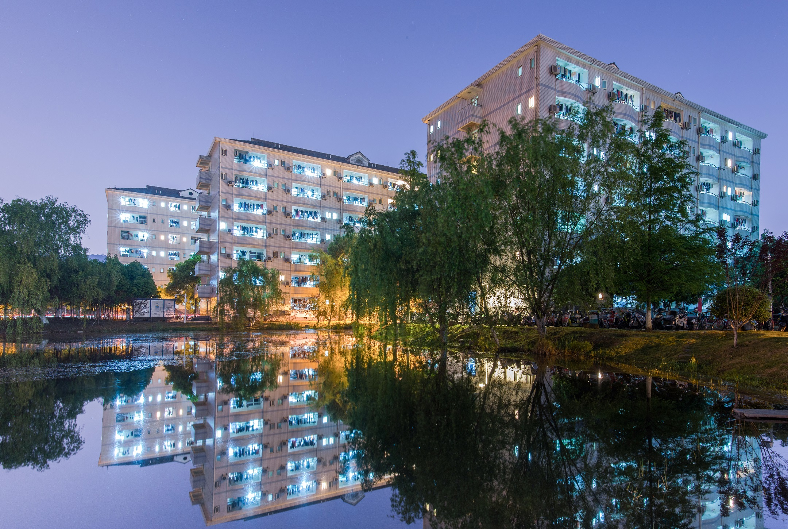
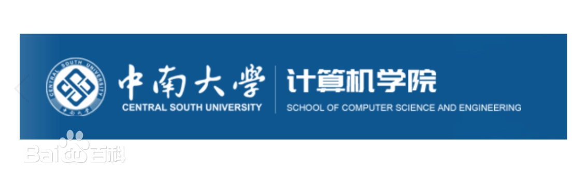
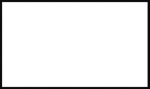

中南大学坐落在中国历史文化名城——湖南省长沙市，占地面积317万平方米。跨湘江两岸，依巍
巍岳麓，临滔滔湘水，环境幽雅，景色宜人，是求知治学的理想园地。学校设有31个二级学院，拥有享
“南湘雅”美誉的湘雅医院、湘雅二医院、湘雅三医院3所大型三级甲等综合性医院及湘雅口腔医院，和
湘雅医学院附属海口医院、附属肿瘤医院、附属儿童医院、附属长沙医院、附属株洲医院、附属常德医
院6所非直属附属医院。
中南大学由原湖南医科大学、长沙铁道学院与中南工业大学于2000年4月
合并组建而成。原中南工业大学的前身为创建于1952年的中南矿冶学院，原长沙铁道学院的前身为创建
于1953年的中南土木建筑学院，两校的主体学科最早溯源于1903年创办的湖南高等实业学堂的矿科和路
科。原湖南医科大学的前身为1914年创建的湘雅医学专门学校，是我国创办最早的西医高等学校之一。
中南大学历经百年办学积淀，顺应中国高等教育体制改革大势，弘扬以“知行合一、经世致用”为
核心的大学精神，力行“向善、求真、唯美、有容”的校风，坚持自身办学特色，服务国家和社会重大需
求，团结奋进，改革创新，追求卓越，综合实力和整体水平大幅提升。
中南大学计算机科学与技术学科于1977年开始招收电子计算机专业本
科生，1982年开始招收硕士研究生，2001年获计算机应用技术博士
点，2002年获计算机科学与技术博士后科研流动站，2010年获国家一级学科博士
授予权，2011年获湖南省一级重点学科。学院还拥有电子信息、智能科学
与技术、生物与医药专业学位博士授权点。获批国家级基础学科拔尖学生培养计
划2.0基地、国家级首批特色化示范性软件学院,共有计算机科学与技术、软
件工程、数据科学与大数据技术、信息安全4个国家级一流建设专业。教育
部学科评估结果A-，计算机科学与技术学科稳居ESI全球1‰。学院拥有国家级研究平
台1个，省部级研究平台18个。
中南大学外国语学院由原长沙铁道学院外国语学院、中南工业
大学外国语学院和湖南医科大学外语部于2000年4月
合并组建而成。外语办学始于1972年，至今已有50多年发展历史，现
已发展成为文化底蕴深厚、育人队伍强大、教学设施齐备、学术资源丰
富、社会服务优良、国际合作广泛、培养质量优异的创新型、高水平
外语教育与研究学院。